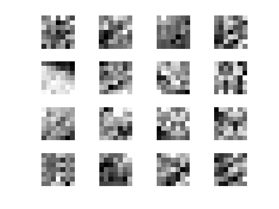
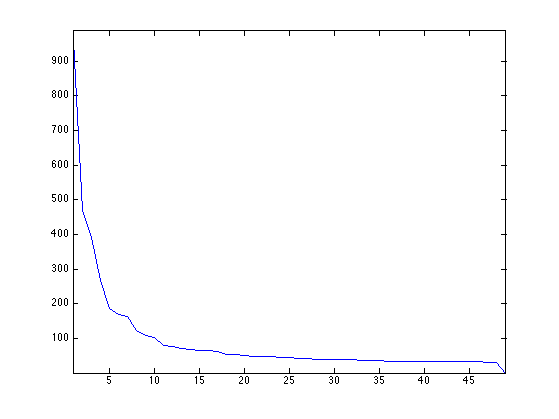
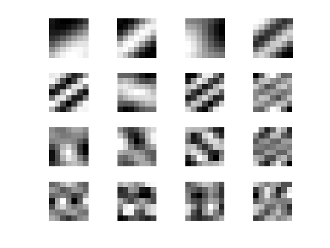
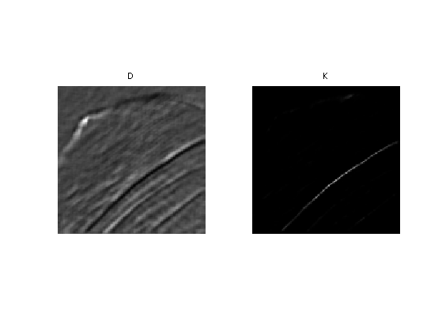
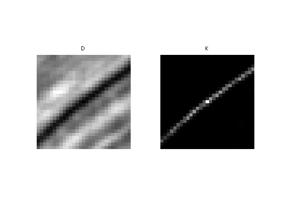
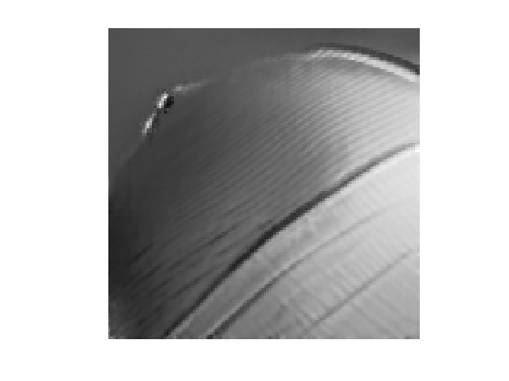
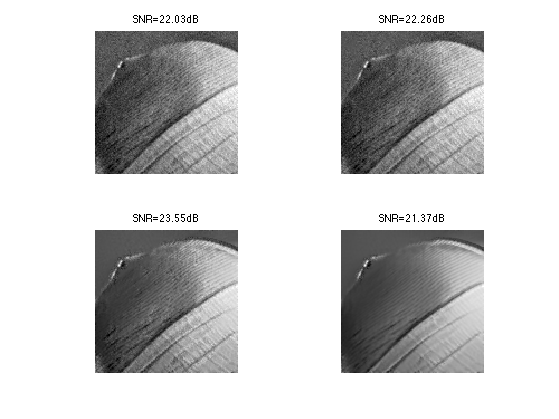
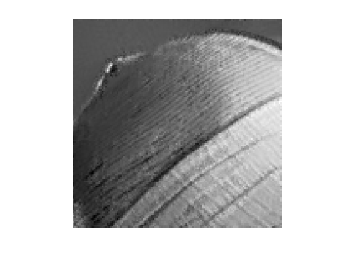

Non Local Means
This numerical tour study image denoising using non-local means. This algorithm has been introduced for denoising purposes in [BuaCoMoA05]
Contents
Installing toolboxes and setting up the path.
You need to download the following files: signal toolbox and general toolbox.
You need to unzip these toolboxes in your working directory, so that you have toolbox_signal and toolbox_general in your directory.
For Scilab user: you must replace the Matlab comment '%' by its Scilab counterpart '//'.
Recommandation: You should create a text file named for instance numericaltour.sce (in Scilab) or numericaltour.m (in Matlab) to write all the Scilab/Matlab command you want to execute. Then, simply run exec('numericaltour.sce'); (in Scilab) or numericaltour; (in Matlab) to run the commands.
Execute this line only if you are using Matlab.
getd = @(p)path(p,path); % scilab users must *not* execute this
Then you can add the toolboxes to the path.
getd('toolbox_signal/'); getd('toolbox_general/');
Patches in Images
This numerical tour is dedicated to the study of the structure of patches in images.
Size \(N = n \times n\) of the image.
n = 128;
We load a noisy image \(f_0\in \RR^N\).
c = [100 200];
f0 = load_image('lena');
f0 = rescale( crop(f0,n, c) );
Display \(f_0\).
clf; imageplot(f0);
Noise level \(\si\).
sigma = .04;
Generate a noisy image \(f=f_0+\epsilon\) where \(\epsilon \times \Nn(0,\si^2\text{Id}_N)\).
f = f0 + randn(n,n)*sigma;
Display \(f\).
clf; imageplot(clamp(f));
We denote \(w\) to be the half width of the patches, and \(w_1=2w+1\) the full width.
w = 3; w1 = 2*w+1;
We set up large \((n,n,w_1,w_1)\) matrices to index the the X and Y position of the pixel to extract.
% location of pixels [Y,X] = meshgrid(1:n,1:n); % offsets [dY,dX] = meshgrid(-w:w,-w:w); % location of pixels to extract dX = reshape(dX, [1 1 w1 w1]); dY = reshape(dY, [1 1 w1 w1]); X = repmat(X, [1 1 w1 w1]) + repmat(dX, [n n 1 1]); Y = repmat(Y, [1 1 w1 w1]) + repmat(dY, [n n 1 1]);
We handle boundary condition by reflexion
X(X<1) = 2-X(X<1); Y(Y<1) = 2-Y(Y<1); X(X>n) = 2*n-X(X>n); Y(Y>n) = 2*n-Y(Y>n);
Patch extractor operator
patch = @(f)f(X + (Y-1)*n);
Define the patch matrix \(P\) of size \((n,n,w_1,w_1)\). Each P(i,j,:,:) represent an \((w_1,w_1)\) patch extracted around pixel \((i,j)\) in the image.
P = patch(f);
Display some example of patches
clf; for i=1:16 x = floor( rand*(n-1)+1 ); y = floor( rand*(n-1)+1 ); imageplot( squeeze(P(x,y,:,:)), '', 4,4,i ); end
Dimensionality Reduction with PCA
Since NL-means type algorithms require the computation of many distances between patches, it is advantagous to reduce the dimensionality of the patch while keeping as much as possible of information.
Target dimensionality \(d\).
d = 25;
A linear dimensionality reduction is obtained by Principal Component Analysis (PCA) that projects the data on a small number of leading direction of the coveriance matrix of the patches.
Turn the patch matrix into an (w1*w1,n*n) array, so that each P(:,i) is a w1*w1 vector representing a patch.
resh = @(P)reshape(P, [n*n w1*w1])';
operator to remove the mean of the patches to each patch.
remove_mean = @(Q)Q - repmat(mean(Q), [w1*w1 1]);
Compute the mean and the covariance of the points cloud representing the patches.
P1 = remove_mean(resh(P)); C = P1*P1';
Extract the eigenvectors, sorted by decreasing amplitude
[V,D] = eig(C); D = diag(D);
[D,I] = sort(D, 'descend'); V = V(:,I);
Display the decaying amplitude of the eigenvalues.
clf;
plot(D); axis('tight');
 Display the leading eigenvectors - they look like Fourier modes.
clf; for i=1:16 imageplot( reshape(V(:,i),[w1 w1]), '', 4,4,i ); end
Patch dimensionality reduction operator.
iresh = @(Q)reshape(Q', [n n d]); descriptor = @(f)iresh( V(:,1:d)' * remove_mean(resh(P)) );
Each H(i,j,:) is a \(d\)-dimensional descriptor of a patch.
H = descriptor(f);
Non-local Filter
NL-means applies, to each pixel location, an adaptive averaging kernel that is computed from patch distances.
We denote \(H_{i} \in \RR^d\) the descriptor at pixel \(i\). We define the distance matrix \[ D_{i,j} = \frac{1}{w_1^2}\norm{H_i-H_j}^2. \]
Operator to compute the distances \((D_{i,j})_j\) between the patch around \(i=(i_1,i_2)\) and all the other ones.
distance = @(i)sum( (H - repmat(H(i(1),i(2),:), [n n 1])).^2, 3 )/(w1*w1);
The non-local mean filter compute a denoised image \(\tilde f\) as \[ \tilde f_i = \sum_j K_{i,j} f_j \] where the weights \(K\) are computed as \[ K_{i,j} = \frac{ \tilde K_{i,j} }{ \sum_{j'} \tilde K_{i,j'} } \qandq \tilde K_{i,j} = e^{-\frac{D_{i,j}}{2\tau^2}} . \]
The width \(\tau\) of the Gaussian is very important and should be adapted to match the noise level.
Compute and normalize the weight.
normalize = @(K)K/sum(K(:)); kernel = @(i,tau)normalize( exp( -distance(i)/(2*tau^2) ) );
Compute a typical example of kernel for some pixel position \((x,y)\).
tau = .05; i = [83 72]; D = distance(i); K = kernel(i,tau);
Display the squared distance and the kernel.
clf; imageplot(D, 'D', 1,2,1); imageplot(K, 'K', 1,2,2);
Localizing the Non-local Means
We set a "locality constant" \(q\) that set the maximum distance between patches to compare. This allows to speed up computation, and makes NL-means type methods semi-global (to avoid searching in all the image).
q = 14;
Using this locality constant, we compute the distance between patches only within a window. Once again, one should be careful about boundary conditions.
selection = @(i){clamp(i(1)-q:i(1)+q, 1,n), clamp(i(2)-q:i(2)+q,1,n)};
Compute distance and kernel only within the window.
distance = @(i,sel)sum( (H(sel{1},sel{2},:) - repmat(H(i(1),i(2),:), ...
[length(sel{1}) length(sel{2}) 1])).^2, 3 )/(w1*w1);
distance = @(i)distance(i,selection(i));
kernel = @(i,tau)normalize( exp( -distance(i)/(2*tau^2) ) );
Compute a typical example of kernel for some pixel position \((x,y)\).
D = distance(i); K = kernel(i,tau);
Display the squared distance and the kernel.
clf; imageplot(D, 'D', 1,2,1); imageplot(K, 'K', 1,2,2);
The NL-filtered value at pixel \((x,y)\) is obtained by averaging the values of \(f\) with the weight \(K\).
NLval = @(K,sel)sum(sum(K.*f(sel{1},sel{2})));
NLval = @(i,tau)NLval( kernel(i,tau), selection(i) );
We apply the filter to each pixel location to perform the NL-means algorithm.
[Y,X] = meshgrid(1:n,1:n); NLmeans = @(tau)arrayfun(@(i1,i2)NLval([i1 i2],tau), X,Y);
Display the result for some value of \(\tau\).
tau = .03; clf; imageplot(NLmeans(tau));
Exercice 1: (check the solution) Compute the denoising result for several values of \(\tau\) in order to determine the optimal denoising that minimizes \(\norm{\tilde f - f_0}\).
exo1;
Display the best result.
clf; imageplot(clamp(fNL));
Exercice 2: (check the solution) Explore the influence of the \(q\) and \(w\) parameters.
exo2;
Bibliography
- [BuaCoMoA05] Buades, B. Coll, J.f Morel, A review of image denoising algorithms, with a new one, SIAM Multiscale Modeling and Simulation, Vol 4 (2), pp: 490-530, 2005.